In this section we'll discuss setting up a provider's schedule in the calendar and adding patient appointments.
Login to OpenEMR using your assigned username and password.
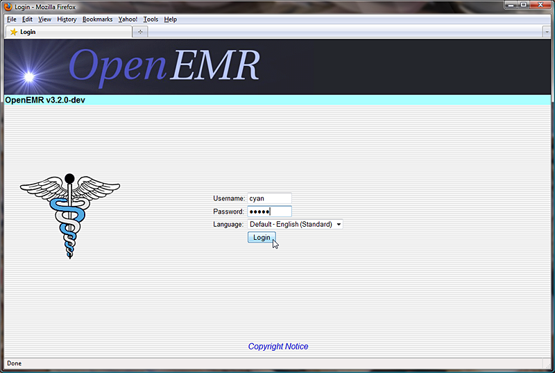For users who are not practitioners, such as someone who works at the front desk, the Calendar will show the schedules of all the practitioners at the clinic by default. When you first start using OpenEMR you will need to set up schedules for all of your practitioners.
To do this, select from the 'Providers' list on the right the person who's schedule you wish to set up. Next click the time at which that provider is scheduled to enter the office.
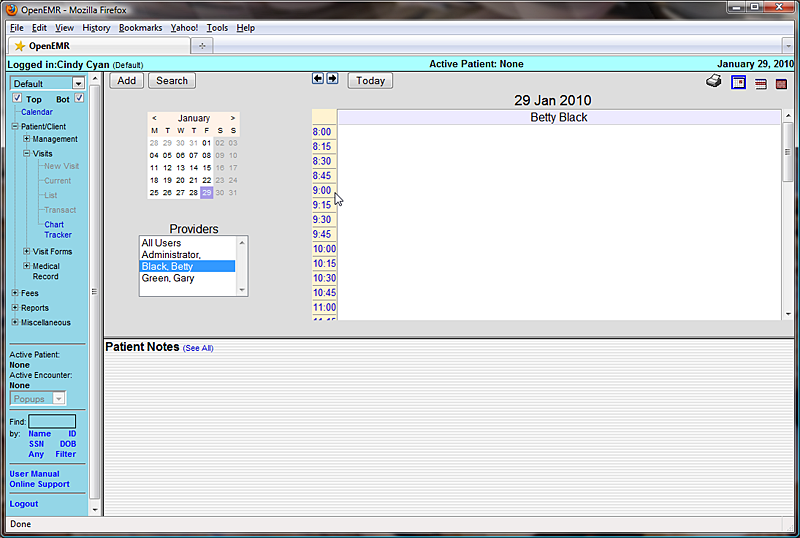This will present you with the 'Add New Event' dialog box.
The clinic and provider name should be automatically filled in for you, as well as the time that you selected. Choose “In Office” from the 'Category' drop-down list.
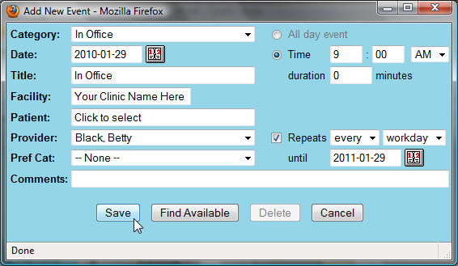You can also choose to make this a repeating event, which allows you to set up an event only once for a given period of time. Do this by selecting the 'Repeats' checkbox, and setting the appropriate frequency & duration.
When you are finished click 'Save' to update the calendar. Now you will see a block of available time slots for that provider's schedule. Scroll down and click on the time that the provider is scheduled to leave the office for the day.
The same process is used to create a repeating “Out Of Office” event.
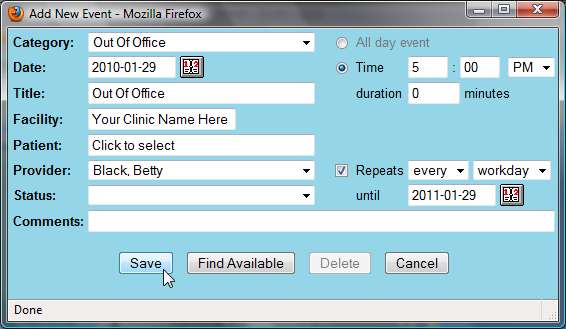You can also add a lunch break in your practitioners' schedules. This is done the same way, with the exception of the duration, which in this case is non-zero.
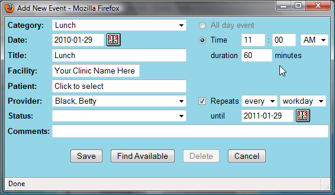Now you can see your practitioner's full schedule laid out on the Calendar page. Continue setting up the Calendar in this fashion until all your practitioners' schedules have been entered.
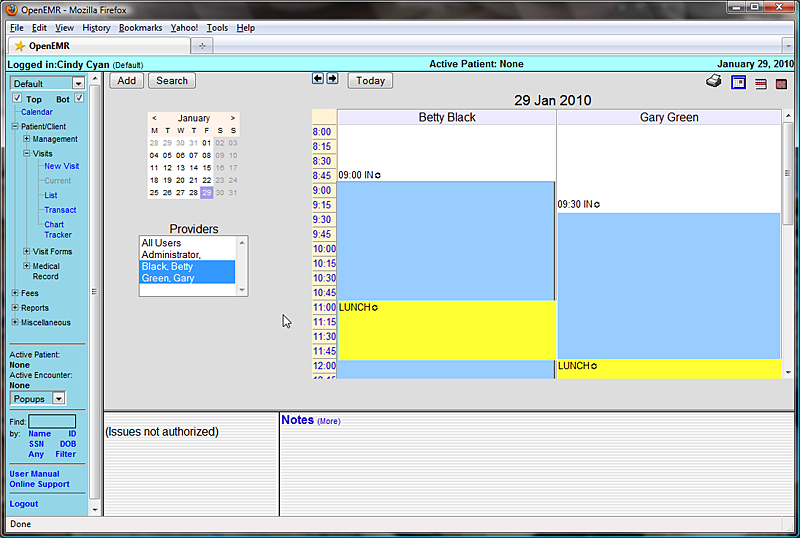Now that the clinic and all it's practitioners are set up, you can begin scheduling appointments for your patients.
To locate a patient in the system, enter all or part of their name into the search field in the bottom left corner of the screen (below the navigation list) and click 'Name'. This will bring up a list of all the patients in your system matching that name. If you need to narrow the list, you can enter a longer search term, such as their full name (Eg. “rourk, rod”).
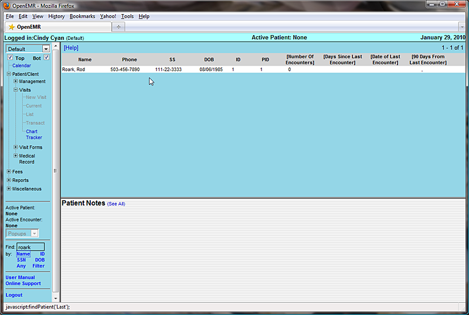Click on the desired name to bring up the Demographics summary for that patient. If you have the patient on the phone, now would be a good time to confirm that their contact and insurance information is up to date. If the patient is not already in the system, you can select 'New/Search' from the menu to begin entering their information.
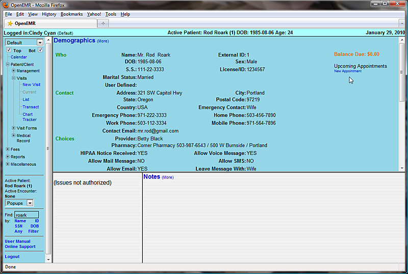The right-hand side of the Demographics summary shows a list of all current and future appointments for that patient. Click 'New Appointment' to schedule an office visit.
This will present you with the same 'Add New Event' dialog used earlier. This time “Established Patient” is selected as the Category. You can change the category to “New Patient” if this is their first visit. If a primary provider has been entered for that patient, they will be selected automatically.
Click 'Find Available' to see a list of appointment times available for that provider for the next 7 days. You can change the start date or the number of days shown and click 'Search' to display a new list using those parameters.
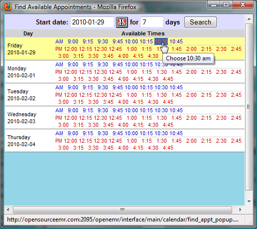Once a date and time have been agreed upon, selecting that time from the list will close the window, and the selected time will appear in the 'Add Event' dialog.
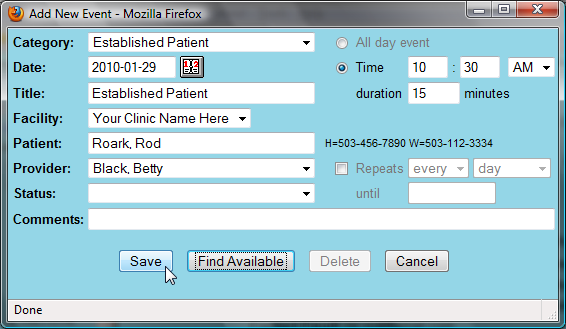Make sure to enter the correct duration for the appointment and click 'Save'.
Return to the calendar using the navigation menu on the left. Advancing to the appropriate date, using the arrows at the top of the screen, shows the new appointment listed in the provider's schedule. Mousing over the appointment displays a toot-tip with information about that patient, such as date of birth.
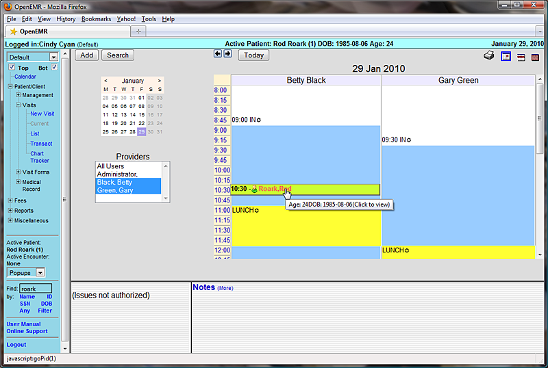OpenEMR's calendar system includes a status indicator, allowing doctors and staff to see at a glance what is going on with all appointments and the corresponding encounters for the day.
To change the status of a given appointment, double-click on the appointment block. This brings up the 'Edit Event' window. Choose the correct appointment status from the drop-down list. Notice each status has a unique symbol associated with it.

You can also type a note into the 'Comments' line if more information is needed. Click 'Save' to update the status of the appointment.
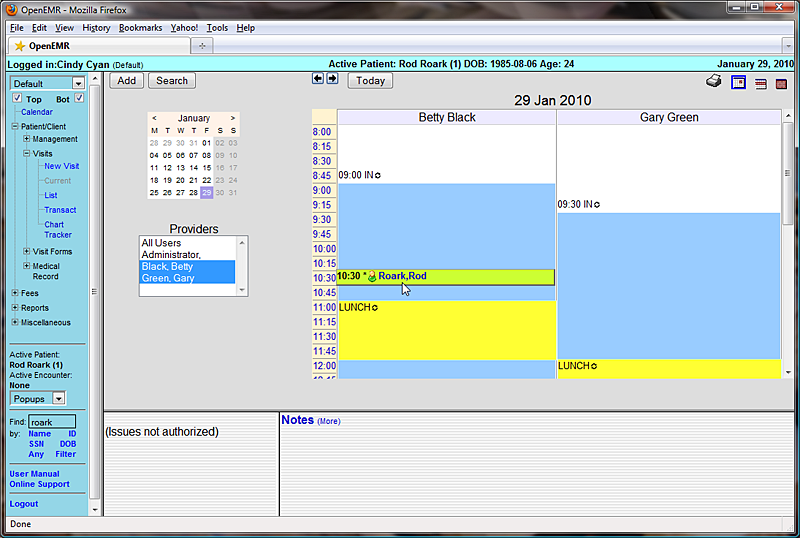You can see that the symbol next to the appointment time has changed to indicate it's new status.